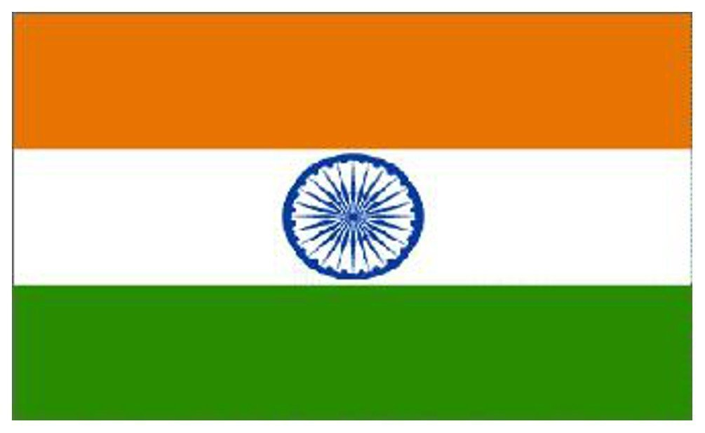

copyright © 2018, The Great India
All Rights Reserved
Developer & Maintained By ANIL KUMAR
India is a vast South Asian country with diverse terrain – from Himalayan peaks to Indian Ocean coastline – and history reaching back 5 millennia. In the north, Mughal Empire landmarks include Delhi’s Red Fort complex and massive Jama Masjid mosque, plus Agra’s iconic Taj Mahal mausoleum. Pilgrims bathe in the Ganges in Varanasi, and Rishikesh is a yoga centre and base for Himalayan trekking.

| India Flag | India Map |
|---|
After India's independence on August 15, 1947, India received most of the subcontinent's 562 widely scattered polities, or princely states, as well as the majority of the British provinces, and parts of three of the remaining provinces. Muslim Pakistan received the remainder. Pakistan consisted of a western wing, with the approximate boundaries of modern Pakistan, and an eastern wing, with the boundaries of present-day Bangladesh.
| India Before | India After |
|---|
"One individual may die for an idea; but that idea will, after his death, incarnate itself in a thousand lives. That is how the wheel of evolution moves on and the ideas and dreams of one nation are bequeathed to the next." – Netaji Subhash Chandra Bose. This list of Indian freedom fighters honors the independence leaders that dedicated their lives for the cause of Indian independence. They are ranked in order of popularity by thousands of people in India and around the world.


| Mahatma gandhi | Alluri SRR | Subhash Chandra Bose | Bhagat singh |
|---|
India has a large number of political parties; it is estimated that over 200 parties were formed after India became independent in 1947. Jawaharlal Nehru, a central figure in Indian politics before and after independence became the first Prime Minister of India. He is considered to be the architect of the modern Indian nation-state. Rajendra Prasad, a freedom fighter during the Indian independence movement was the first President of independent India.


| Narendra Modi | Lal Bhadur Sastri | Abdul Kalam | Vajpai |
|---|
The main difference between a leader and others is that the individual truly sets an example for others with his performance. Leaders perform the hardest tasks before they ask others to do it- they literally show how it needs to be done and inspire others to emulate them.


| Ratana Tata | Dhirubhai Ambani | Azim Prem Ji | Narayana Murthy |
|---|
Badminton is a popular sport in India. It is the second most played sport in India after Cricket. Badminton in India is managed by Badminton Association of India. India has achieved some very good success at International level in badminton. Indian “shuttler” Saina Nehwal was ranked second in the world in the year 2010.


| PV Sindhu | Saina Nehwal | Sachin Tendulkar | Gopi Chand |
|---|